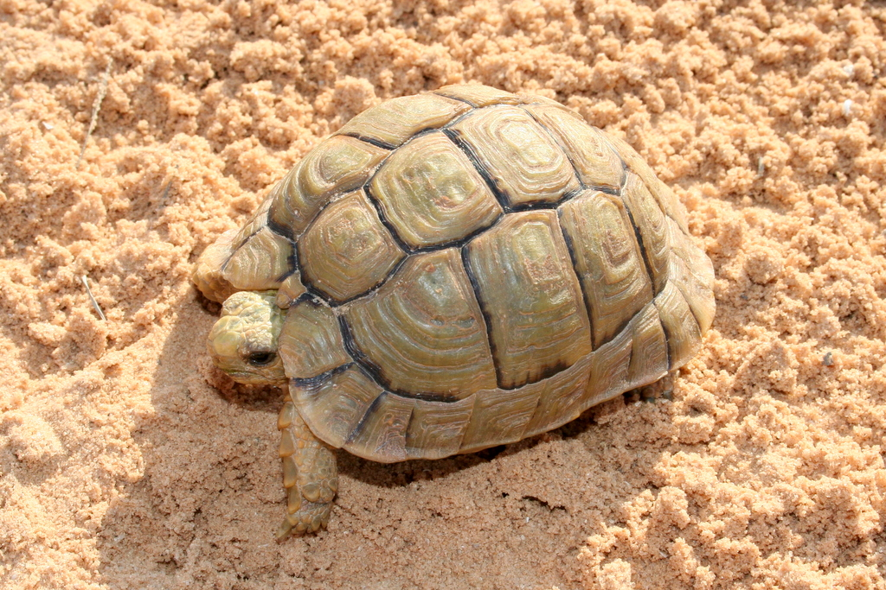
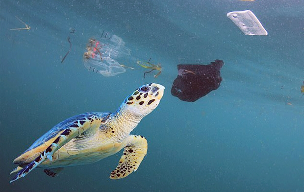

멸종위기 거북이
멸종 위기에 처한 육지 거북
이베리아반도에서 가장 멸종 위기에 처해있는 종은 그리스 거북 또는 며느리발톱거북으로, 주로 남부 무르시아와 북부 알메리아, 웰바(도냐나) 그리고 마요르카에 서식합니다. 이 거북이 멸종 위기에 처한 이유는 산불, 농경의 확대와 무절제한 도시 개발 때문입니다. 이러한 현상은 거북들의 자연 서식지를 훼손하고 그들을 멸종위기로 내몰고 있습니다.
이집트, 리비아에 자생하는 소형 육지거북인 이집트땅거북은 IUCN 적색리스트에서 심각한 멸종위기종으로 분류되어 있으며, 서식지파괴, 내전, 애완동물로의 수요로 인한 3중고를 겪고 있습니다. "이집트"라는 이름과 달리 이집트 국내에서는 서식지 파괴로 거의 멸종되었으며, 리비아에 남은 개체군 또한 빠른 속도의 감소를 보여주고 있습니다. 유럽에서는 밀수중 적발된 개체를 각국 동물원에 보내서 보호하고 있다. 사육번식이 성공한 육지거북이기도 합니다.
멸종 위기에 처한 바다거북
바다에 서식하는 7개의 주요 거북 종 중에 6개 종이 멸종될 위기에 처해있다. 현재 이 거북들은 지구상에서 사라질 가능성이 높아 위태로운 상황에 있습니다.
여러 바다거북들은 불법 거래와 밀렵, 플라스틱의 섭취, 서식지 파괴, 낚시 그물 등의 여러 이유들로 인해 멸종위기 상태에 놓여 있습니다.
실제로 한 논문에 따르면, 연구팀은 15마리의 바다거북에게 물과 진짜 먹이, 바닷물에 담가뒀던 플라스틱, 깨끗한 플라스틱을 제공하고 섭식활동을 관찰했습니다. 그 결과, 물과 깨끗한 플라스틱 냄새에는 아무런 반응을 보이지 않던 바다거북은 진짜 먹이는 물론이고, 바닷물에 담가뒀던 플라스틱까지 먹이로 착각해 삼키려 했습니다. 특히 먹이 냄새가 어디서 나는지 연신 코를 물 밖으로 내밀고 탐색하는 전형적인 특성도 보였습니다.
바다거북이 먹이로 착각한 플라스틱 쓰레기는 바닷물에 잠긴 동안 표면에 플랑크톤이 쌓이면서 특유의 ‘먹이 냄새’를 풍겼습니다. 연구팀은 이 냄새 때문에 바다거북이 플라스틱 쓰레기를 먹이로 착각하는 것으로 보고 있습니다. 플라스틱 쓰레기 모양이 해파리와 비슷해 먹이로 착각하는 것 아니겠느냐는 기존 추측보다 설득력 있는 이야기입니다.
멸종을 막기 위해
멸종을 막기 위해 생태계에 변화를 최소화해야 하고, 인간들의 환경파괴 및 오염 행위를 최소화해야 합니다. 바다거북에게 위협이 되는 해양쓰레기, 방치된 그물 문제를 해결하기 위한 어업체계 제어. 개체수 조절을 위해 서식지와 산란장소 보호, 불법 거래와 밀렵 제재. 환경 변화로 인한 문제를 막기 위해 온난화를 가속하는 유해가스 배출 줄이기와 같은 활동을 시행해야 합니다.
이러한 노력은 비단 거북뿐만이 아닌 이 세상에 살아가는 모든 생물들을 위한 노력입니다. 결국 거북이도 인간도 다른 생물들도 생태계라는 거대한 순환체계의 한 부품이기 때문에 하나가 망가지기 시작한다면 돌고 돌아 인간에게 돌아올 것입니다.